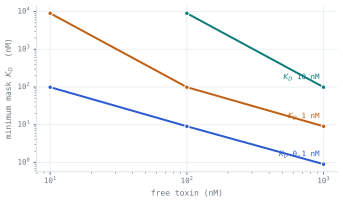
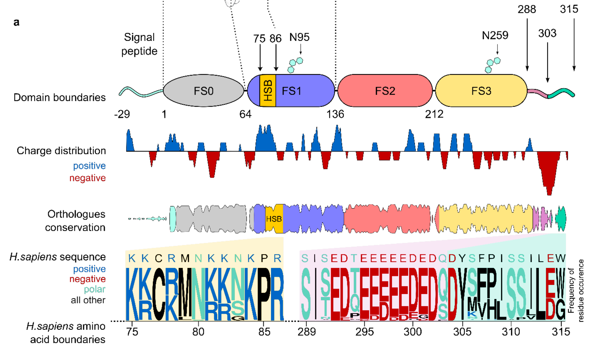
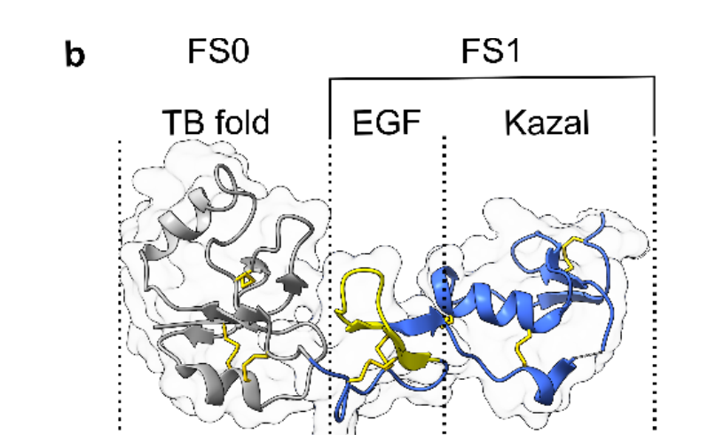
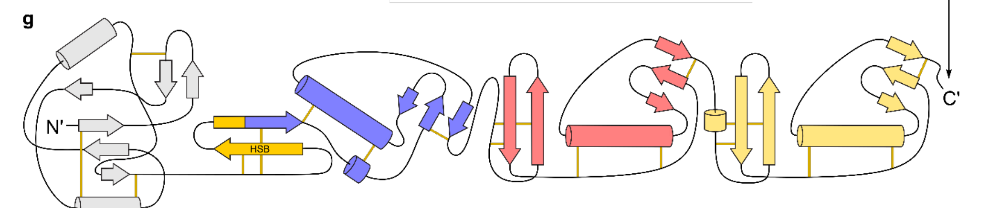
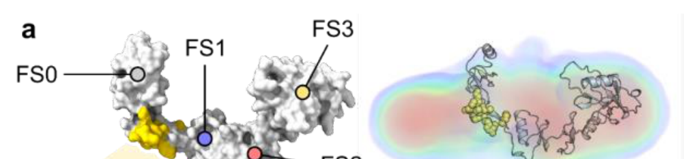
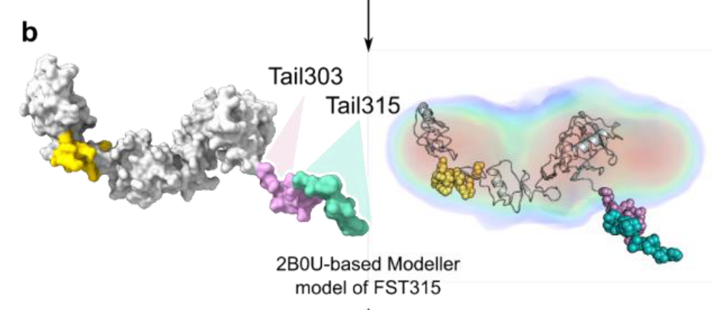
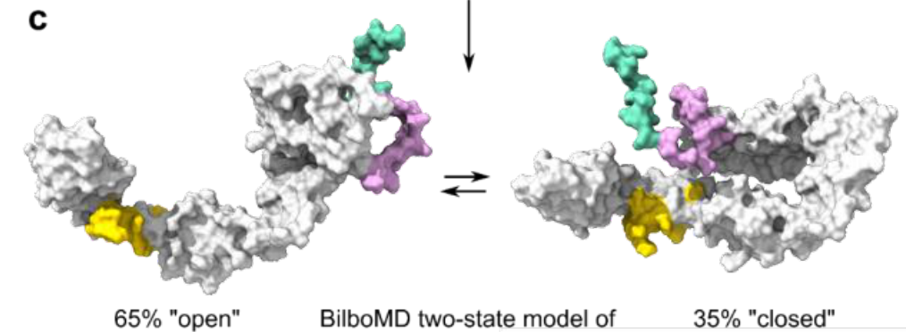

Designing a binder that is switched off until it arrives
How do you design a protein that does nothing in circulation and starts working only where you want it to? This page sets out the question, proposes a design method, and then runs that method end to end on one experimental structure to see what it produces.
A binder that is inert until something local switches it on
Most therapeutic binders work everywhere in the body at once, which is why their side effects so often come from hitting the right target in the wrong place. A conditionally active binder is meant to be inert while it circulates and active only where some local cue — a protease, an acidic pocket, a metal ion — tells it to switch on.
The usual way to build one is to tether a mask over the binding site and give the tether a cleavable linker. Clinically this architecture has a long history and a mixed record; the biology is not the hard part. The hard part is a thermodynamic one, and it is easy to state.
So the design target is not affinity. It is a window: tight enough to hold state A, loose enough to lose state B. That window may be wide, narrow, or empty, and which of those it is depends on geometry that can be measured before any candidate exists. That observation is what the method below is built around.
A pipeline built around that window
The ordering is the design decision. Generative models are usually put first, and the structure used afterwards to filter what they produce. Here it runs the other way: the complex is measured and the tether priced before anything is generated, so the attachment point, the linker length and the usable range of mask affinities are already fixed when generation starts. Generation then searches a space the geometry has narrowed, rather than a space that has to be filtered down afterwards.
Why each module is separate
| module | what it answers | why it is its own box |
|---|---|---|
| 00 Constrain | Where could a mask attach, and what mask affinity could possibly work? | It runs once per target and bounds everything downstream. Skipping it means generating candidates that no affinity could rescue. |
| 01 Generate | What masks and linkers are worth trying? | Grafts, language models and diffusion models are interchangeable here. Nothing downstream needs to know which was used. |
| 02a Trigger | Does the cue open the switch here and nowhere else? | Selectivity, not cleavability, is the quantity. The cue itself is a parameter — protease, pH or metal ion all plug into the same slot. |
| 02b Binding | Is the site covered while tethered, and free once cut? | Two states, scored separately. Collapsing them to one number is what hides the failure mode. |
| 03 Rank | Which designs survive all the constraints at once? | Trade-offs are kept visible. Averaging the scores would let a design that cannot release compensate with a high masking score. |
| 04 Measure | What is actually true? | The only module producing data the others can learn from, and the slowest. |
Running it on a real complex
The example below applies every built module to one deposited structure: Co-crystal of broadly neutralizing VHH in complex with short neurotoxin 1 (P01426) Naja pallida, x-ray diffraction at 2.5 Å, deposited 2025-06-11. Four independent copies of the complex sit in the asymmetric unit, so the interface is measured four times and the spread between them is a free reproducibility check.
This complex was not the first one tried. The constraint module is also a screening step: it reports, before anything is generated, whether a target can support a measurable mask at all. The first candidate failed that test, and the record of it is kept below.
Set aside: 9GCN, where the geometry defeats the measurement The pipeline was run end to end on this complex first. Both controls failed, for a reason worth keeping.
VHH TPL1158_01_C09 with alpha-cobratoxin, 3.0 Å. The paratope sits almost entirely in CDR3 (11 of 16 residues, with CDR2 contributing none) — and the N-terminal residue Q1 is itself part of the paratope, burying 52 Ų.
That makes masking trivially easy and measuring it impossible. Any peptide tethered at that terminus starts on top of the binding site, whatever its sequence, so occlusion cannot tell a designed mask from a random one.
| mask kind | mean occlusion % | n |
|---|---|---|
| inert control | +18.1 | 5 |
| scrambled control | +16.1 | 5 |
| truncated control | +15.9 | 5 |
| epitope graft | +14.3 | 10 |
The inert poly-glycine control occluded +18.1% of the paratope against +14.3% for the designed grafts and +16.1% for the scrambled ones. The control scored highest. There is no separation to rank on.
The second control failed too. Predicting the free nanobody with its toxin should have reproduced a pose the crystal structure already shows. Only 28% of the predicted contacts landed on the known paratope, so the complex module could not adjudicate masking here either.
Why it is still here. The constraint module had already flagged it: the N-terminus was 0.0 Å from the nearest paratope residue, against 42 Å for the C-terminus. That number was visible before a single construct was folded, and it is the criterion the replacement system was chosen on. A pipeline that measures the geometry first can tell you that a target is unsuitable before you spend anything on it.
Measuring the complex
The paratope is defined as the residues that lose solvent-accessible surface when the complex forms, and the geometry that matters for a tether is how far each terminus sits from that surface.

| geometry | Å | consequence |
|---|---|---|
| N-terminus to paratope centroid | 21.21 | a short linker already reaches |
| N-terminus to nearest paratope residue | 12.42 | the N-terminus is in the paratope |
| C-terminus to paratope centroid | 34.21 | 1.6× further to span |
| paratope maximum extent | 25.14 | surface a mask must cover |
Pricing the tether
A tethered mask behaves as though present at an effective concentration set by the linker. Treating the Gly/Ser linker as a worm-like chain with persistence length 4.5 Å and 3.8 Å per residue gives Ceff at the span measured above — a distance taken from the structure, not assumed.
Ceff(d) = 1660.54 · (3 / 2π⟨r²⟩)3/2 · e−3d²/2⟨r²⟩ [M]
Pmasked = Ceff / (Ceff + KD,M)
PNT = (T/KD,T) / (1 + T/KD,T + M/KD,M)



Candidates, and the controls that make them legible
One peptide is already known to engage this paratope: the antigen's own contact segment. Grafting it needs no generative model and brings its own negative controls.
| antigen segment | sequence | length | contacts |
|---|---|---|---|
| C40–T55 | CGCPTVKPGIKLNCCT | 16 | 16 |
| E20–N22 | ETN | 3 | 3 |
| mask | sequence | aa | kind | origin |
|---|---|---|---|---|
| epi1 | CGCPTVKPGIKLNCCT | 16 | epitope graft | antigen C40-T55, 16 contact residues |
| epi1_half | CGCPTVKP | 8 | truncated control | leading half of the graft |
| epi1_noCys | SGSPTVKPGIKLNSST | 16 | epitope graft | epi1 with cysteines substituted to serine |
| epi1_scram | PIVKCKNGGCCTTLCP | 16 | scrambled control | same composition, shuffled (seed 42) |
| epi2 | ETN | 3 | epitope graft | antigen E20-N22, 3 contact residues |
| polyG | GGGGGGGG | 8 | inert control | no designed interaction; masking should fail |
Is the site covered?
Does the mask actually reach the paratope?
Every construct folded with ESMFold, then the paratope's solvent-accessible surface in the fusion compared against the same residues in the folded free nanobody. The grafts are read against their scrambled, truncated and inert controls at matched linker length; the controls are the reason the comparison means anything.


| construct | kind | linker | occluded % | min CA–CA Å | contacts <8 Å | VHH pLDDT | core RMSD Å |
|---|---|---|---|---|---|---|---|
| polyG_L20 | inert control | 20 | +8.9 | 6.57 | 3 | 83 | 1.72 |
| epi1_scram_L30 | scrambled control | 30 | +8.5 | 5.74 | 2 | 81 | 1.72 |
| epi1_L15 | epitope graft | 15 | +7.8 | 6.97 | 3 | 83 | 0.13 |
| polyG_L15 | inert control | 15 | +7.7 | 4.4 | 8 | 84 | 1.70 |
| epi1_scram_L20 | scrambled control | 20 | +7.1 | 6.86 | 3 | 82 | 1.71 |
| epi1_noCys_L15 | epitope graft | 15 | +6.5 | 6.46 | 2 | 83 | 1.71 |
| epi1_L30 | epitope graft | 30 | +6.3 | 7.09 | 1 | 81 | 1.76 |
| epi1_L20 | epitope graft | 20 | +6.1 | 7.48 | 2 | 82 | 0.16 |
| epi1_noCys_L10 | epitope graft | 10 | +6.0 | 6.72 | 2 | 84 | 1.68 |
| epi1_L10 | epitope graft | 10 | +5.9 | 7.49 | 1 | 84 | 0.14 |
| epi2_L30 | epitope graft | 30 | +5.3 | 19.78 | 0 | 82 | 1.75 |
| epi1_noCys_L20 | epitope graft | 20 | +5.2 | 6.9 | 1 | 82 | 1.76 |
| epi1_noCys_L30 | epitope graft | 30 | +5.1 | 5.65 | 3 | 81 | 1.75 |
| epi1_half_L15 | truncated control | 15 | +4.9 | 9.94 | 0 | 84 | 1.64 |
| epi1_scram_L15 | scrambled control | 15 | +4.2 | 7.53 | 1 | 83 | 1.65 |
| epi1_half_L10 | truncated control | 10 | +3.6 | 7.91 | 1 | 86 | 0.12 |
| polyG_L30 | inert control | 30 | +3.5 | 16.98 | 0 | 82 | 1.73 |
| epi1_noCys_L5 | epitope graft | 5 | +3.1 | 8.33 | 0 | 85 | 1.63 |
| epi1_scram_L5 | scrambled control | 5 | +2.6 | 17.19 | 0 | 85 | 0.14 |
| epi1_half_L30 | truncated control | 30 | +2.4 | 13.33 | 0 | 82 | 1.79 |
| epi1_half_L20 | truncated control | 20 | +1.9 | 12.39 | 0 | 83 | 1.74 |
| epi1_scram_L10 | scrambled control | 10 | +1.7 | 10.27 | 0 | 85 | 0.12 |
| epi1_L5 | epitope graft | 5 | +0.9 | 12.07 | 0 | 84 | 0.16 |
| epi2_L20 | epitope graft | 20 | +0.7 | 21.48 | 0 | 83 | 1.70 |
| epi2_L5 | epitope graft | 5 | +0.7 | 23.83 | 0 | 87 | 1.21 |
| epi2_L10 | epitope graft | 10 | +0.6 | 12.85 | 0 | 86 | 1.59 |
| epi2_L15 | epitope graft | 15 | +0.4 | 18.89 | 0 | 85 | 1.68 |
| polyG_L10 | inert control | 10 | +0.3 | 15.92 | 0 | 85 | 1.69 |
| epi1_half_L5 | truncated control | 5 | -0.1 | 20.91 | 0 | 86 | 0.13 |
| polyG_L5 | inert control | 5 | -0.3 | 19.71 | 0 | 86 | 1.57 |
With the mask on, can the antigen still bind?
Occlusion says the mask covers the site. It does not say the antigen is excluded — those are different claims, and only a two-chain prediction separates them. The free nanobody with its toxin is the calibration case: the crystal structure already answers it, so how well the prediction recovers that answer sets how much the masked cases are worth.
| case | what it tests | atom contacts | buried Ų | fraction on paratope | min |
|---|
The gaps, named
| module | what is missing | what it would take |
|---|---|---|
| 02a Trigger | no selectivity score at all | data cleavage measurements for the relevant proteases against a negative panel. Published profiling shows the obvious candidates share a P1′ preference with host enzymes, so selectivity, not cleavability, is the obstacle |
| 01 Generate | no de novo backbones | GPU RFdiffusion or BindCraft would widen the search beyond grafted and redesigned peptides |
| 02b Binding | one structure per design, no ensemble | GPU BioEmu-2 would sample conformations instead of a single pose |
| 03 Rank | scores computed, selection not automated | a Pareto front with uncertainty attached, once 02a exists to rank against |
| 04 Measure | nothing has been made | the loop is open until it is |
Where the numbers come from
Every value and chart here is produced by the analysis code, run in stages against one deposited structure. Each stage writes its results to a file and this page is generated from those files, so nothing is typed in by hand. All of it runs on CPU.
| stage | method | produces |
|---|---|---|
| Measure the complex | Shrake-Rupley surface burial | paratope, CDRs, terminal geometry |
| Price the tether | worm-like chain | effective concentration, masking ceiling, release floor |
| Build the library | antigen epitope graft, with controls | mask × linker constructs |
| Fold and measure | ESMFold | paratope occlusion per construct |
| Redesign the mask | ProteinMPNN | new masks on the folded backbone |
| Test the competition | Boltz-2 | two-chain complex with the antigen |
Code and stage outputs: github.com/Natalija-Stepurko/dtu_postdoc
Where this problem is familiar from
The two-state, tethered-affinity problem on this page is one I characterised experimentally during the PhD, in a protein that solves it naturally.
Background: a tethered competitive regulator, measured PhD work on follistatin — the same two-state, tethered-affinity problem, approached experimentally.
Follistatin's isoforms differ at the C-terminus. FST315 carries an acidic tail that folds back onto the FS1 domain — the same surface that binds heparan sulphate. The tail is therefore an endogenous mask: covalently tethered, competing for a binding site, and tuned so that it can be displaced. That is the architecture this pipeline sets out to design.



The tail competes, and its affinity is measurable. Biolayer interferometry and fluorescence polarisation were used to measure how tightly the tail binds back, and how that changes with ionic strength — the tail–domain interaction is largely electrostatic.


Two states, resolved experimentally. SEC-SAXS and BilboMD modelling showed FST315 is not one structure in solution but an equilibrium between an open and a closed conformation — the closed one being the state with the tail engaged.





Sources
- Damsbo A. et al. Co-crystal of VHH TPL1158_01_C09 with α-cobratoxin. PDB 9RIU
- Ahmadi S. et al. Nanobody-based recombinant antivenom for cobra, mamba and rinkhals bites. Nature 647:716–725 (2025). 10.1038/s41586-025-09661-0
- Desnoyers L.R. et al. Tumor-specific activation of an EGFR-targeting probody. Science Translational Medicine 5:207ra144 (2013). 10.1126/scitranslmed.3006682
- Zhou H.-X. Loops in proteins can be modeled as worm-like chains. Journal of Physical Chemistry B 105:6763–6766 (2001). 10.1021/jp011355n
- Lin Z. et al. Evolutionary-scale prediction of atomic-level protein structure with a language model. Science 379:1123–1130 (2023). 10.1126/science.ade2574
- Dauparas J. et al. Robust deep learning-based protein sequence design using ProteinMPNN. Science 378:49–56 (2022). 10.1126/science.add2187
- Wohlwend J. et al. Boltz-1 and Boltz-2, open biomolecular interaction models. github.com/jwohlwend/boltz
- Shrake A., Rupley J.A. Environment and exposure to solvent of protein atoms. Journal of Molecular Biology 79:351–371 (1973). 10.1016/0022-2836(73)90011-9
- Martin-Alonso C. et al. Deep learning guided design of protease substrates. Nature Communications 17:54 (2026). 10.1038/s41467-025-67226-1